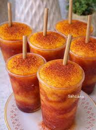

The mangonada is a mexican recipe made with mango and chamoy is perfect for the summer
Combine mango and pineapple juice in a blender; blend until smooth. Set aside.
Rub lime wedge around the rim of a glass, then dip in 1 teaspoon chili-lime seasoning. Juice lime into the glass; add 1 tablespoon chamoy and remaining 1 teaspoon chili-lime seasoning. Pour 1/2 of the mango-pineapple mixture into the prepared glass. Add remaining 1 tablespoon chamoy sauce and top with remaining mango-pineapple mixture.